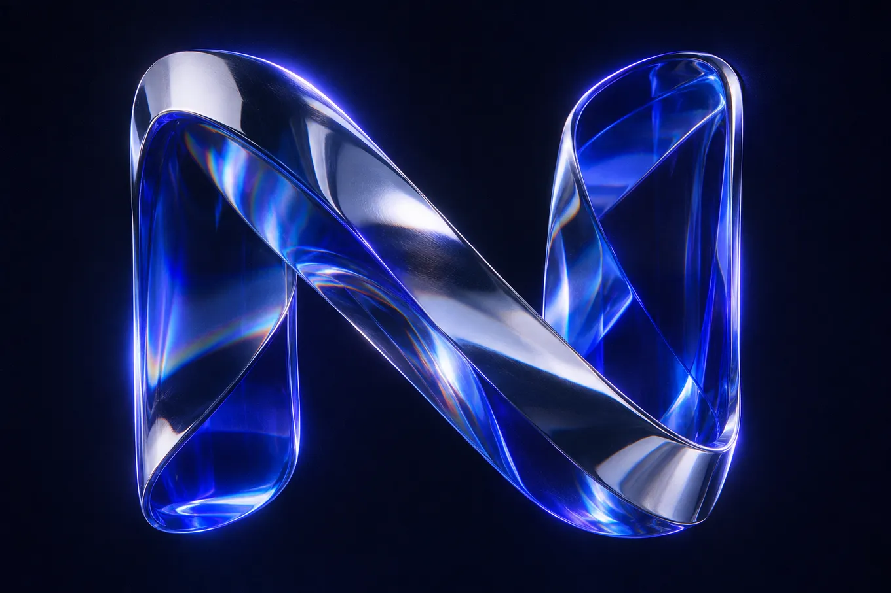
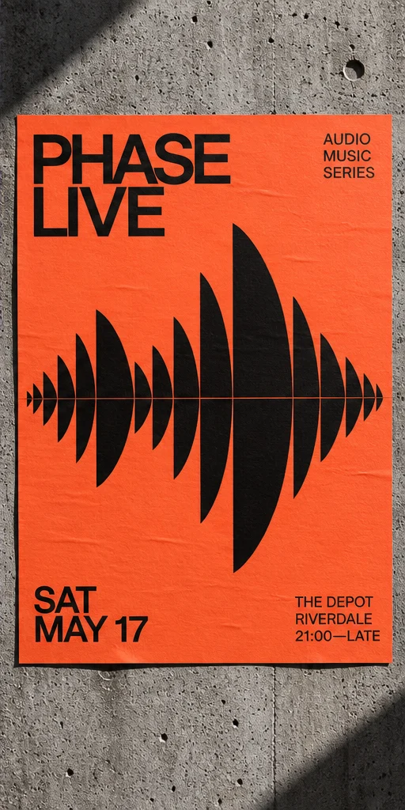

Həndəsi formalar və yüksək kontrast üzərində qurulan vizual kimlik konsepti.

Qrafik dizayner / Şəxsi hub
Brend kimliyi, tipoqrafiya və rəqəmsal vizual kommunikasiya üçün ideyaları araşdırdığım və işlərimi topladığım şəxsi məkan.
PORTFEL
Həndəsi formalar və yüksək kontrast üzərində qurulan vizual kimlik konsepti.

Miqyas, boşluq və tipoqrafiyanın ritmi üzərində qurulan jurnal konsepti.

Səs dalğasının hərəkətini həndəsi formaya çevirən afişa konsepti.
KATALOQ
Komandanın məqsədinə uyğun seçilmiş işlər və materiallar.
Rəng kontrastı və tipoqrafiya üçün canlı sınaq.
Brend, çap, rəqəmsal dizayn və hərəkət istiqamətləri.
Praktiki məşqlər və addım-addım yoxlama.
Əməkdaşlıq mərhələləri və təhvil prosesi.
WhatsApp üçün iş təklifini hazırla.
Vizual layihələr, konseptlər və dizayn qərarları.
Rəqəmsal layihələrim və peşəkar profillərim üçün ünvan kitabçası.
Peşəkar profilim və vizual dizayna marağım.
Qeydlər, materiallar və paylaşmaq istədiyim resurslar.